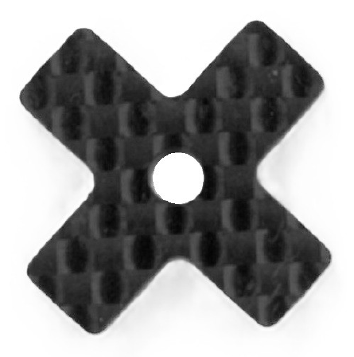
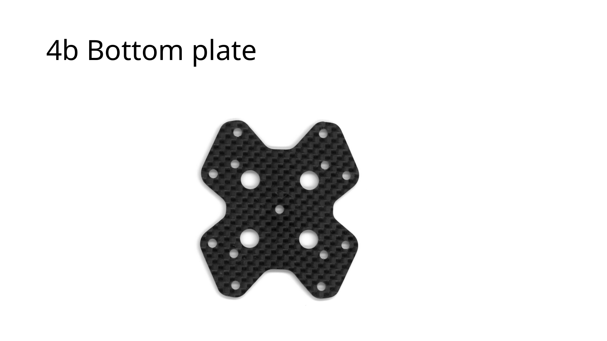
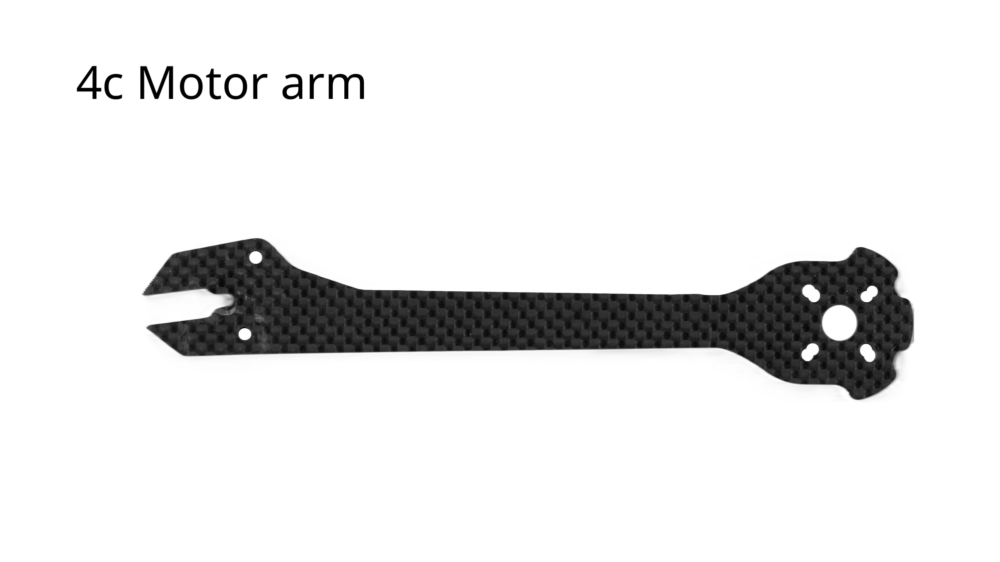
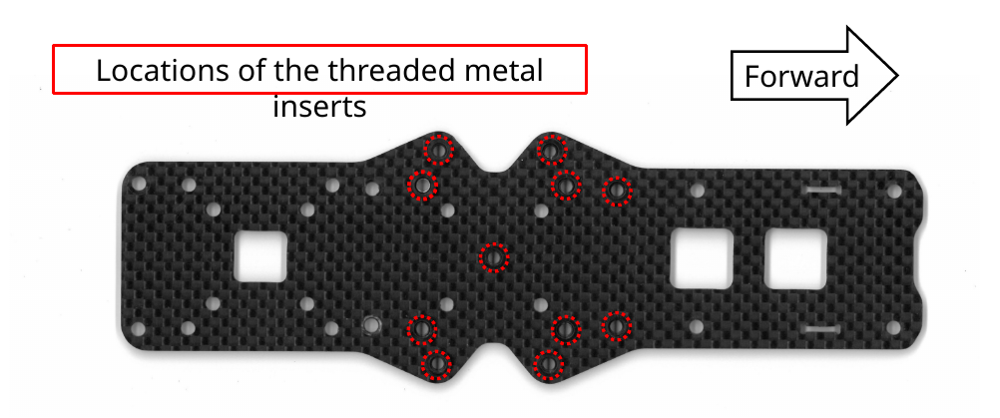
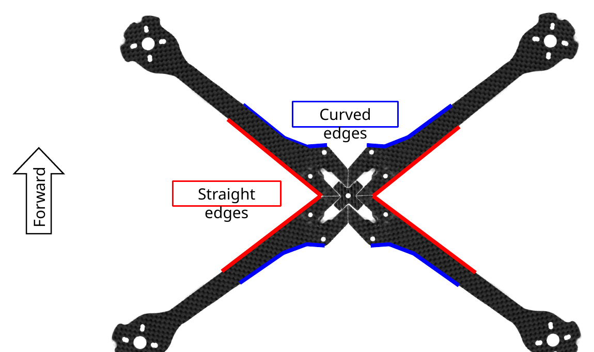
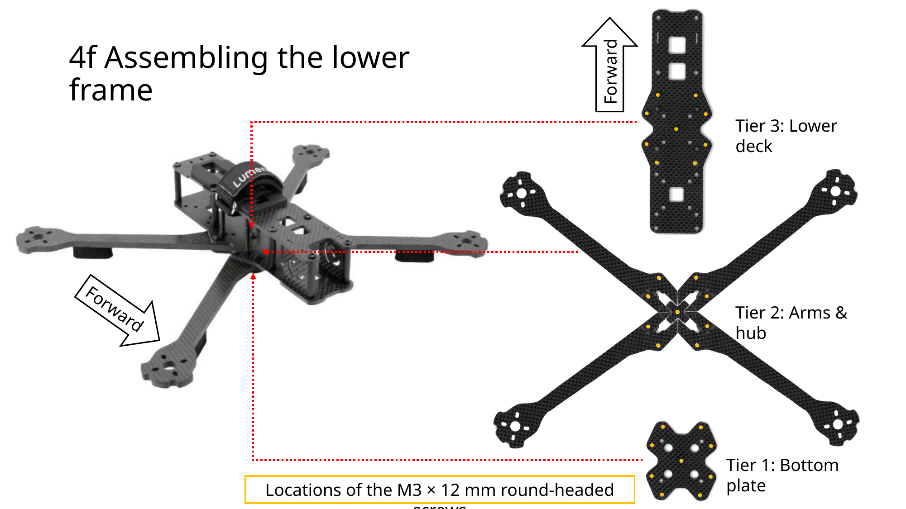

Task 4: Assemble the lower frame
Assemble the hub, arms, bottom plate, and lower deck using the short frame screws.
Day 2–3No blockers
Task 4: Assemble the lower frame
Assemble the hub, arms, bottom plate, and lower deck using the short frame screws.
Blockers
This task has no blockers. It can be started immediately.
None
Not marked complete
Parts required
- Frame package
- Arm hub
- Bottom plate
- Four motor arms
- Lower deck
- Nine M3 × 12 mm round-head screws from the Lumenier package
Tools required
- 2.0 mm Allen key
Important
Do not confuse the Lumenier frame hardware with the separate USMA fastener kit. This task uses the Lumenier package only.
Do not confuse the Lumenier frame hardware with the separate USMA fastener kit. This task uses the Lumenier package only.
Step 1. Open the frame package and identify the parts
- Retrieve the frame package from the supplies shelf.
- Open the package carefully. Keep the bag because it will be used later for parts storage.
- Remove the arm hub, bottom plate, four motor arms, and lower deck.
- Do not confuse the lower deck with the upper deck. The lower deck has metal threaded inserts protruding from one face and no Lumenier lettering. The upper deck has no protrusions and does have the Lumenier marking.

Fig. 4a. Arm hub.

Fig. 4b. Bottom plate.

Fig. 4c. Motor arm.

Fig. 4d. Lower deck. The side with the metal inserts is the top side.
Step 2. Build the arm-and-hub subassembly
- Lay out the four arms in the pattern shown in Fig. 4e.
- Pay close attention to the arm shape. The curved edges face forward or aft, and the straight edges face out to the sides.
- Insert the hub into the center until all five pieces are held together by friction.

Fig. 4e. Use this layout to orient all four arms before inserting the hub.
Step 3. Stack the frame and install the nine screws
- Lay the bottom plate on the bench.
- Place the arm-and-hub subassembly on top of the bottom plate.
- Place the lower deck on top of the arm-and-hub assembly. The lower deck face with the metal inserts must face upward.
- Confirm the three-tier stack shown in Fig. 4f: Tier 1 is the bottom plate, Tier 2 is the arms and hub, and Tier 3 is the lower deck.
- Carefully flip the stack upside down so the bottom plate is on top.
- Align the nine screw holes shown in Fig. 4f.
- From the Lumenier package, identify the M3 × 12 mm round-head screws. There should be nine of them.
- Insert all nine screws and hand-start them before tightening any of them.
- Tighten the screws in a crisscross pattern with the 2.0 mm Allen key.
- Maintain positive control of the remaining frame hardware and the empty bag.

Fig. 4f. Confirm the stack order and the nine M3 × 12 mm round-head screw locations before tightening.
Common errors
- Using the upper deck instead of the lower deck.
- Installing the lower deck upside down so the metal inserts face downward.
- Misorienting the arms so the curved and straight edges do not match Fig. 4e.
- Tightening screws before all nine have started.
- Mixing Lumenier frame hardware with the separate USMA fastener kit.